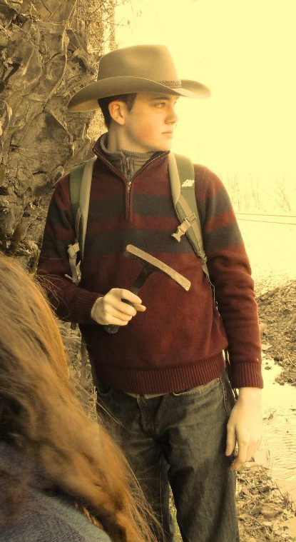

Home

I am a PhD student in the Department of Earth and Environment at Boston University. I work with Sergio Fagherazzi on coastal ecogeomorphology, the study of the interactions between biology and coastal landscapes. I apply a combination of field work, remote sensing, and numerical modeling to solve problems ranging from tidal network geometry to ecological succession.
Check out my research for more about what I do or my CV for more about me.
More timely updates can be found on my news page.